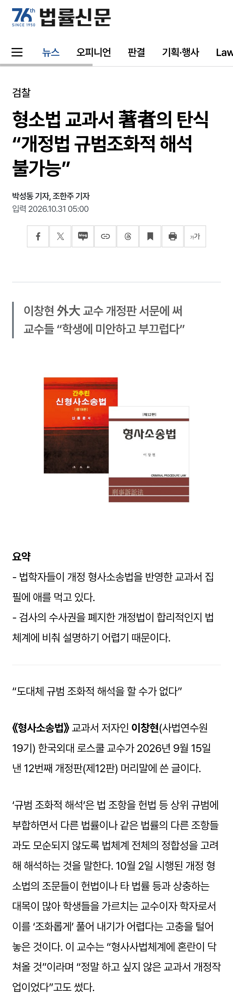

형사소송법 교수들 사이에선 검사의 수사권을 폐지한 개정법이 '규범 조화적 해석'을 할 수 없는 개병신법이라고 한다

형사소송법 교수들 사이에선 검사의 수사권을 폐지한 개정법이 '규범 조화적 해석'을 할 수 없는 개병신법이라고 한다
뭔지 잘 모르는 내용인디 댓글 내용 보니 정떡이네
그럼 나서서 행동을 해라, 바보같은 국민은 모른다. 전문가들이 나서서 행동해야 무브먼트가 따라오는거지 않나?
교수들이 옳은말 하는건 믿겠는데 우리가 뭐 어쩔수 있겠냐고, 명분이 없는데
그럼 개돼지들 처럼 사육 당하면 됨 ㅋㅋ
법 병신 치안 병신 국방 병신 이제 다음이 미드오픈인가
어허 교주님이 원하시고 신도님들이 원하신대잖아
신도들 절반정도는 어리둥절함ㅋㅋ
지들이 정의라잖아
지금부터라도 마피아조직하나 창단해야하나
딱봐도 서민들만 피해보는 개악인데 찬성하는게 이해가 안됐음
피해자 입장에서는 경찰이나 검찰 아무데나 고소장 접수하면 됐었는데
이젠 법 공부하면서 고소고발도 해야하는 상황이니...
실상 범죄자 아니고서야 검찰에 피해본 서민이 몇이나 되려나싶음
헌재는 왜 보완수사폐지 헌법소원 각하한겨? 교수들 말과 앞뒤가 안맞는디... 수사를 못하게 하는게 말이 안되는거 같은데 범죄를 키우는꼴임
미드오픈~
개병신들 : 교수들이 뭘 알아! 우리가 곧 정의다!


ㅇㄱㄸ
업보 아닌가?
암조직만 떼야하는데 장기 자체를 뜯어버렸다는거지?
이미 뒤진사람이랑 지금 살아있는사람 딱 두명의 암조직을 떼겠다고 전국민 장기뜯기하는거임
그게 병신같으면 저건 괜찮아지는거임? 뭔 개좆지잡새끼인가 ㅋ